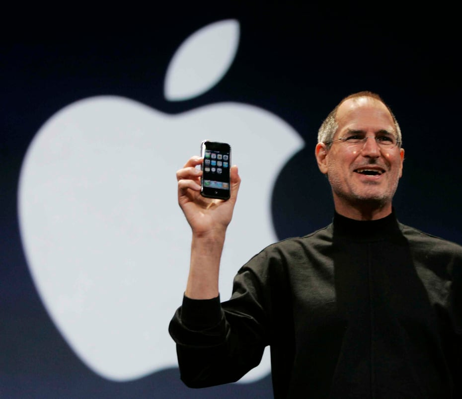

Evolución de la tecnología
por Gustavo Rentería1837
Samuel Morse desarrolla el telégrafo y el código Morse, marcando el inicio de las comunicaciones a larga distancia.
La invención del telégrafo1876
Alexander Graham Bell patenta el teléfono, revolucionando las comunicaciones.
Alexander graham bell y la polémica del teléfono1936-1938
Alan Turing desarrolla la máquina de Turing, un concepto fundamental en la teoría de la computación.
¿Quién fue Alan Turing?1943-1944

Se construye Colossus, la primera computadora digital programable, en Bletchley Park, Reino Unido, para descifrar códigos alemanes durante la Segunda Guerra Mundial.
Computadora que descifró mensajes de Hitler1950

Se introduce el primer disco duro, el IBM 350, con una capacidad de almacenamiento de 5 megabytes.
IBM 350, el primer ordenador con disco duro1969

El ARPANET, precursor de internet, se establece con la conexión de las universidades de Stanford y UCLA.
La historia del nacimiento de ARPANET1971
Ray Tomlinson envía el primer correo electrónico, estableciendo una nueva forma de comunicación digital.
Ray Tomlinson inventor del email1973
Vinton Cerf y Bob Kahn proponen el protocolo TCP/IP, la base de la arquitectura de internet.
Modelo de arquitectura de protocolo TCP/IP1983

Se introduce el protocolo DNS, facilitando la navegación en la web al asignar nombres a direcciones IP.
¿Quién es el inventor del protocolo de comunicación DNS?1989
Tim Berners-Lee inventa la World Wide Web en el CERN, permitiendo la creación de sitios web y la navegación mediante hipervínculos.
30 años de la World Wide Web1991

Linus Torvalds lanza el kernel de Linux, un sistema operativo de código abierto.
Conoce la fascinante historia de Linus Torvalds1993

Marc Andreessen desarrolla el navegador Mosaic, el primer navergador web gráfico.
Cuando Mosaic dominaba el mundo (de los navegadores)1998
Larry Page y Sergey Brin fundan Google, transformando la forma en que se accede y se busca información en línea.
Del garaje a Googleplex2001
Apple lanza el iPod, revolucionando la forma en que se consume y se comparte música.
Apple presenta a iPod2004
Mark Zukerberg lanza Facebook, iniciando la era de las redes sociales.
2004 Mark Zuckerberg lanza “Thefacebook”2007
Apple presenta el iPhone, combinando teléfono, reproductor de música y conexión a internet en un solo dispositivo.
Apple reinventa el teléfono con iPhone2010
Instagram se lanza, popularizando el uso de aplicaciones de compartición de fotos.
Instagram: Evolución del producto2012
Google Glass se introduce como uno de los primeros dispositivos de realidad aumentada.
La historia de Google Glass2015
La ONU declara el acceso a internet como un derecho humano
Promoción, protección y disfrute de los derechos humanos en Internet2020